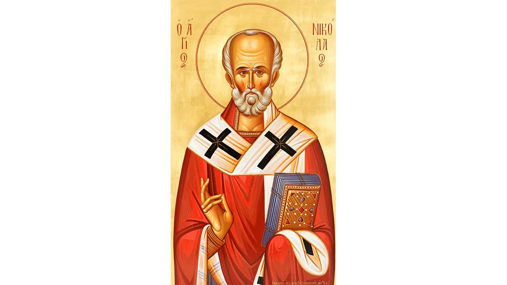

Prossimamente
In preparazione
In arrivo
Nuovo approfondimento
Articolo in preparazione. Presto disponibile in questa sezione.
Feste e ricorrenze
Le ricorrenze religiose e civili dell'Impero Russo, con date, significato e tradizioni.
Calendario delle ricorrenze
 Ricorrenze
Ricorrenze
7 settembre 1812
La ricorrenza della battaglia di Borodino del 1812. Testo completo in arrivo.
Leggi l'articoloAltre ricorrenze
 Ricorrenze
Ricorrenze
17 luglio
Il ricordo del martirio della Santa Famiglia Imperiale. Testo completo in arrivo.
Leggi l'articolo
Ricorrenze19 dicembre
La venerazione di San Nicola in Russia. Testo completo in arrivo.
Leggi l'articoloIn arrivo
Articolo in preparazione. Presto disponibile in questa sezione.